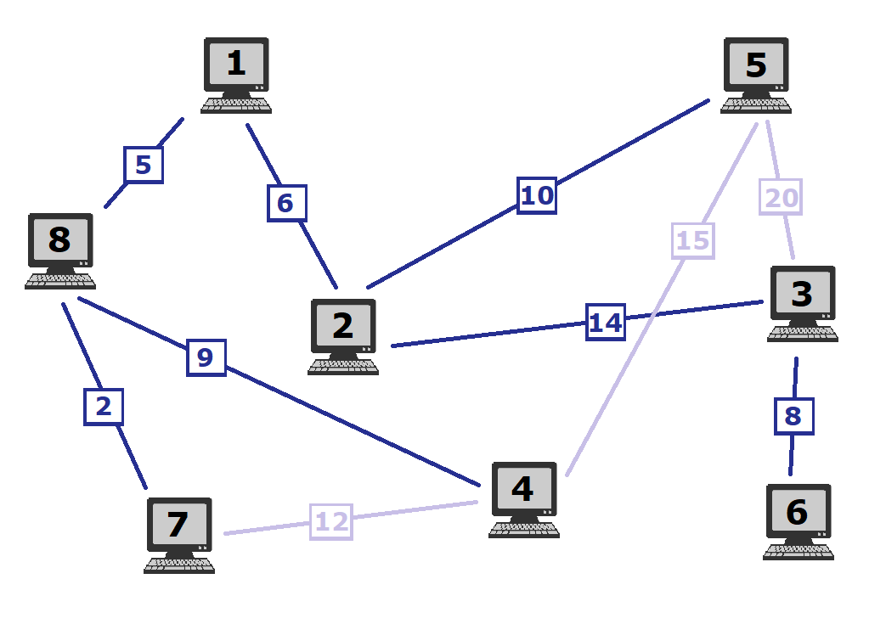
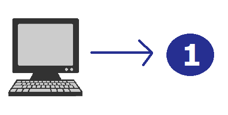

Cu ajutorul planului domnului Andrei, putem rezolva problema. Pentru a face asta, asociem planului un
graf neorientat.
Se numește graf neorientat perechea ordonată de mulțimi G=(X,U), unde X este o mulțime finită și nevidă numită mulțimea nodurilor (vârfurilor), iar U este o mulțime de perechi neordonate de forma [x,y], cu x,y∈X, numită mulțimea muchiilor grafului.

Calculatoarele din planul domnului Andrei devin noduri (vârfuri), fiecare având asociat un număr de identificare.

Legăturile dintre calculatoare devin muchii ale grafului, acestea având şi ele asociat câte un cost corespunzător costului din planul domnului Andrei.